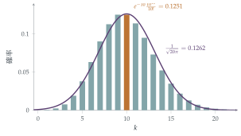

STEP II 2016、第13問
先に進む前に問題を読んでおこう。問題は STEP Support Programme の問題データベースにある： step.maths.org/questions/16-s2-q13
導入
\(100!\) はどれくらい大きいのだろうか。実際に掛け算をすると時間がかかる。答えは \(158\) 桁である。スターリングの公式（Stirling’s formula）\(n! \approx \sqrt{2\pi n}\,(n/e)^n\) を使えば、たった1行で誤差 \(0.1\%\) 以内の値が得られる。これは数学で最も役に立つ近似の一つであり、確率論、統計物理学、アルゴリズムの解析で絶えず用いられている。
証明は数多くあり、積分を使うもの（第 4.4 節）や、オイラー＝マクローリンの公式（Euler–Maclaurin formula）を使うものがある。この問題が与えるのは、その中でも最も意外な証明、すなわち確率による証明である。平均 \(n\) のポアソン分布（Poisson distribution）は近似的に正規分布（normal distribution）に従い、両者をピークで比較すると \(n!\) の値が決まってしまう。スターリングの公式に現れる \(\sqrt{2\pi}\) は、文字どおり正規分布の密度に現れる \(\sqrt{2\pi}\) なのである。
取りかかる前に
平均（mean）\(\mu\)、分散（variance）\(\sigma^2\) の離散確率変数 \(X\) が近似的に正規分布に従うとき、\(\mathrm{P}(X = \mu)\) はおよそいくらか。（\(\mu\) を中心とする幅 \(1\) の区間の確率を考えよ。）
正規近似（normal approximation）では \(\mathrm{P}(X = \mu) \approx \mathrm{P}(\mu - \frac12 < X < \mu + \frac12)\) であり、これはおよそ幅 \(1\) にピークでの密度（density）を掛けたもの、すなわち \(\frac{1}{\sigma\sqrt{2\pi}}\) である。
順を追って解く
段階 1 16枚の硬貨
\(X \sim \mathrm{B}(16, \frac12)\) の平均は \(8\)、分散は \(16 \cdot \frac12 \cdot \frac12 = 4\) であるから、\(\sigma = 2\) である。正規近似により、 \[\mathrm{P}(X = 8) \approx \frac{1}{2\sqrt{2\pi}} \approx 0.1995.\] 正確な値は \(\binom{16}{8}/2^{16} = \frac{12870}{65536} \approx 0.1964\) であり、誤差は \(2\%\) 以内である。
段階 2 中心二項係数
\(\mathrm{B}(2n, \frac12)\) の平均と標準偏差（standard deviation）は何か。\(\mathrm{P}(X = n)\) を正確な形と近似の形で書け。
平均は \(n\)、分散は \(\frac n2\) であるから、\(\sigma = \sqrt{n/2}\) である。正確には \(\mathrm{P}(X = n) = \binom{2n}{n}\frac{1}{2^{2n}}\) であり、近似的には \(\frac{1}{\sqrt{n/2}\sqrt{2\pi}} = \frac{1}{\sqrt{\pi n}}\) である。両者を等しいとおくと、 \[\frac{(2n)!}{(n!)^2\,2^{2n}} \approx \frac{1}{\sqrt{\pi n}}, \qquad (2n)! \approx \frac{2^{2n}(n!)^2}{\sqrt{n\pi}}. \qed\]
段階 3 スターリングの公式
パラメータ \(n\) のポアソン分布は、平均と分散がともに \(n\) に等しい。\(\mathrm{P}(X = n)\) を正確な形と近似の形で書け。
正確には \(\mathrm{P}(X = n) = e^{-n}\frac{n^n}{n!}\) である。\(n\) が大きいとき、ポアソン分布は近似的に正規分布に従い（これは \(n\) 個の独立なポアソン\((1)\) 確率変数の和である）、\(\sigma = \sqrt n\) であるから、\(\mathrm{P}(X = n) \approx \frac{1}{\sqrt{2\pi n}}\) となる。両者を等しいとおくと、 \[n! \approx \sqrt{2\pi n}\,e^{-n}n^n. \qed\]

振り返り
1点での確率 \(\approx\) 密度×幅。 格子分布（lattice distribution）では、ある点における正規分布の密度がその点の確率を近似する。
正確な式と近似が出会う。 二項分布とポアソン分布の確率は正確な値である。それらを正規近似と等しいとおくことで、階乗の評価が得られた。
式に合わせて分布を選ぶ。 \(\binom{2n}{n}\) からは \(\mathrm{B}(2n, \frac12)\) が、\(\frac{n^n}{n!}\) からはポアソン\((n)\) が思い浮かぶ。
背後にある数学
近似の精度はどれくらいか
この議論はヒューリスティック（heuristic）である。正規近似を1点で用いているが、通常の中心極限定理（central limit theorem）はそれを正当化しない。その厳密版である局所中心極限定理（local central limit theorem）がまさにそれを保証し、この議論を本物の証明にする。実際、スターリングの公式は驚くほど精度が高い。比 \(\frac{n!}{\sqrt{2\pi n}(n/e)^n}\) はおよそ \(1 + \frac{1}{12n}\) であり、\(n = 1\) のときでさえ \(1\) の代わりに \(0.92\) を与え、\(n = 10\) のときには \(0.8\%\) 小さいだけである。完全な級数 \(1 + \frac{1}{12n} + \frac{1}{288n^2} - \cdots\) は漸近級数（asymptotic series）の一例である。\(n\) が大きいほどよい近似を与えるが、\(n\) を固定すると最終的には発散する。
階乗と正規分布はなぜ結びつくのか
スターリングの公式に現れる \(\sqrt{2\pi}\) と正規分布の密度に現れるものは同じ定数である。\(\int_{-\infty}^\infty e^{-x^2/2}\,\mathrm{d}x = \sqrt{2\pi}\) だからである。アブラーム・ド・モアブル（Abraham de Moivre）は1733年、まさにこの方法で二項分布の正規近似を発見した。そのためには \(n\) が大きいときの \(\binom{n}{k}\) の近似が必要だったのである。彼は \(n! \approx Cn^{n + 1/2}e^{-n}\) という形を見いだしたが、定数までは求められなかった。ジェームズ・スターリング（James Stirling）が \(C = \sqrt{2\pi}\) であることを示した。正規分布は階乗の漸近挙動から生まれたのである。
アブラーム・ド・モアブルはフランスのプロテスタントで、ロンドンに亡命し、家庭教師や賭博師への助言で生計を立てていた。彼は1718年に『The Doctrine of Chances』（偶然の理論）を出版し、1733年の小冊子で二項分布の正規近似を発見した。これが正規曲線の最初の登場である。スコットランドの数学者ジェームズ・スターリングは、著書『Methodus Differentialis』（1730年）で定数の値を発表し、ド・モアブルは寛大にもその功績を彼に帰した。階乗の近似は今も活発な研究分野であり、巨大な \(n\) に対する \(n!\) の計算は組合せ論や暗号理論で必要とされている。
思考のスキル
正確な確率を近似と比べると、式に現れる数についての情報が得られることがある。
この「確率論的方法」（probabilistic method）は両方向に働く。ここでは確率が階乗の評価を与えた。エルデシュ（Erdős）はこの方法を用いてグラフの存在を証明した（第 9.2 節）。大学では、解析学、数論、組合せ論の定理を証明するのに確率が使われる場面に出会うだろう。
次の一歩
公式を確かめる。 スターリングの公式を用いて \(10!\) と \(20!\) を見積もり、真の値 \(3\,628\,800\) および \(2\,432\,902\,008\,176\,640\,000\) と比較せよ。
(iii) から (ii) へ。 小問 (iii) のスターリングの公式から小問 (ii) の近似が導かれることを示せ。
\(100!\) の桁数。 \(\log_{10}n! \approx n\log_{10}\frac ne + \frac12\log_{10}(2\pi n)\) を用いて、\(100!\) が \(158\) 桁であることを示せ。
硬貨投げの引き分け。 小問 (ii) を用いて、公平な硬貨を \(1000\) 回投げたとき表がちょうど \(500\) 回出る確率がおよそ \(0.025\) であることを示せ。
さらに学ぶために
William Feller, An Introduction to Probability Theory and Its Applications, Vol. 1（Wiley）、第II章。スターリングの公式を証明している。
Ronald Graham, Donald Knuth & Oren Patashnik, Concrete Mathematics（Addison-Wesley）、第9章。漸近解析を扱う。
Stephen Stigler, The History of Statistics（Harvard University Press）。ド・モアブルと正規曲線の誕生について。